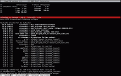

PowerTOP bis 11.04
Archivierte Anleitung
Dieser Artikel wurde archiviert, da er - oder Teile daraus - nur noch unter einer älteren Ubuntu-Version nutzbar ist. Diese Anleitung wird vom Wiki-Team weder auf Richtigkeit überprüft noch anderweitig gepflegt. Zusätzlich wurde der Artikel für weitere Änderungen gesperrt.
Anmerkung: Ab Ubuntu 11.10 ist die Version 1.97 oder neuer in den Paketquellen enthalten, die sich optisch ganz anders präsentiert und daher in einem eigenen Artikel PowerTOP beschrieben wird. Dieser Artikel gilt ausschließlich für die älteren Versionen bis 1.13.
Zum Verständnis dieses Artikels sind folgende Seiten hilfreich:
 PowerTOP
PowerTOP  ist ein Kommandozeilenwerkzeug, welches den Energieverbrauch des Systems analysiert und darauf basierend Tipps zur Optimierung dauerhaft laufender Rechner gibt oder bei mobilen Computern (Laptops, Netbooks) Vorhersagen zu Akkulaufzeit macht.
ist ein Kommandozeilenwerkzeug, welches den Energieverbrauch des Systems analysiert und darauf basierend Tipps zur Optimierung dauerhaft laufender Rechner gibt oder bei mobilen Computern (Laptops, Netbooks) Vorhersagen zu Akkulaufzeit macht.
Installation¶
Folgendes Paket muss installiert [1] werden:
powertop
 mit apturl
mit apturl
Paketliste zum Kopieren:
sudo apt-get install powertop
sudo aptitude install powertop
Benutzung¶
PowerTOP wird im Terminal [2] mit folgendem Befehl gestartet:
sudo powertop OPTIONEN
Der Befehl kann auch ohne Root-Rechte [3] ausgeführt werden, allerdings erhält man dann nur eine reduzierte Ausgabe, also weniger Daten. Im Folgenden wird davon ausgegangen, dass PowerTOP mit Root-Rechten gestartet wurde.
PowerTOP läuft kontinuierlich und muss mit Q oder Strg + C beendet werden.
PowerTOP benötigt nicht zwingend Optionen, kennt aber die folgenden:
| Optionen von PowerTOP | |
| Option | Beschreibung |
-d oder --dump | Einmalige Ausgabe von PowerTOP |
-t X oder --time X | Ausgabe von PowerTOP wird alle X Sekunden aktualisiert, Voreinstellung ist 5 s |
-p oder --pid | Ausgabe der Prozess-IDs |
-h | zeigt eine kurze Hilfe an |
Die Ausgabe von PowerTOP sieht z.B. so aus:

In den obersten Zeilen wird angezeigt, wie lange der Prozessor in welchem Modus war, wobei die Zahl hinter dem "C" den Modus der CPU anzeigt. Je höher die Zahl, desto geringer ist der Stromverbrauch.
Darunter wird ausgegeben, wie oft der Prozessor (aus einem Energiesparmodus) pro Sekunde aufwachen musste, außerdem erhält man eine Schätzung der verbleibenden Batterielaufzeit.
In der Tabelle darunter wird dargestellt, welche Prozesse den Prozessor aus welchem Grund aufwachen lassen. Am Ende der Ausgabe gibt PowerTOP schließlich noch Hinweise, wie man gegebenenfalls Strom sparen könnte. Diese Optionen können direkt per Tastendruck aktiviert werden [3]. Im obigen Beispielfoto lässt sich z.B. die VM-Verwaltung (VM = Virtual Memory, nicht Virtual Machine) so umstellen, dass weniger Schreibzugriffe auf die Festplatte erfolgen.
Alle mit powertop vorgenommenen Einstellungen gehen beim Neustart des Rechners verloren. Wer die Änderungen permanent machen möchte, sollte sich die Vorschläge des Programms notieren und manuell im System verankern, z.B. unter Benutzung von /etc/rc.local.
Kleine Ausnahme:
Das automatische Einbinden (Automount) von CD-/DVD-Medien lässt sich wie unter Automount deaktivieren beschrieben ausschalten. Bei Ubuntu-Systemen, die noch HAL verwenden, kann auch dieser Befehl ausgeführt werden: [2][3]
sudo hal-disable-polling --device /dev/cdrom
Dieser Befehl reicht aus, um die Überprüfung permanent zu deaktivieren und macht ein Eintrag in die /etc/rc.local überflüssig. Programme, die sich auf HAL verlassen, finden so aber nicht mehr selbständig ein neues Medium im CD-/DVD-Laufwerk. Um die automatische Überprüfung wieder zu aktivieren, nutzt man entweder
sudo hal-disable-polling --enable-polling --device /dev/cdrom
oder löscht manuell die verantwortliche Datei media-check-disable-* im Ordner /etc/hal/fdi/information/.
- Erstellt mit Inyoka
-
 2004 – 2017 ubuntuusers.de • Einige Rechte vorbehalten
2004 – 2017 ubuntuusers.de • Einige Rechte vorbehalten
Lizenz • Kontakt • Datenschutz • Impressum • Serverstatus -
Serverhousing gespendet von